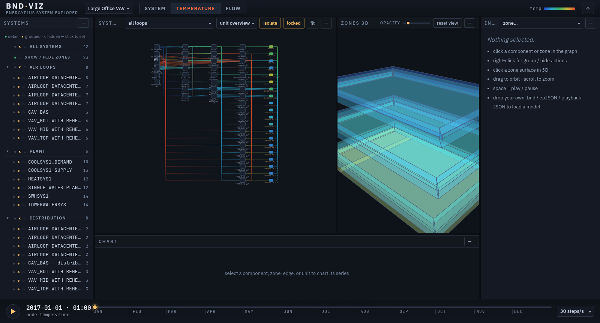
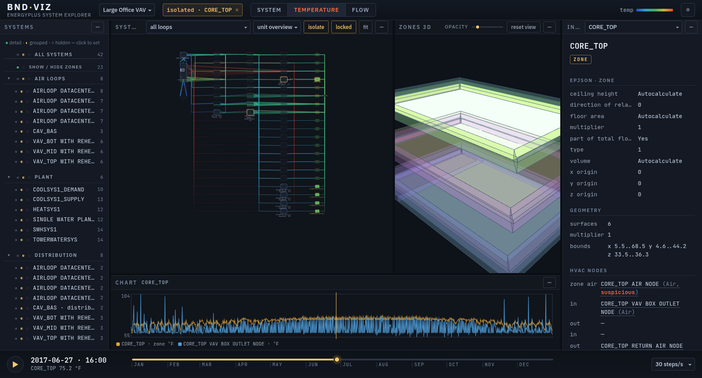
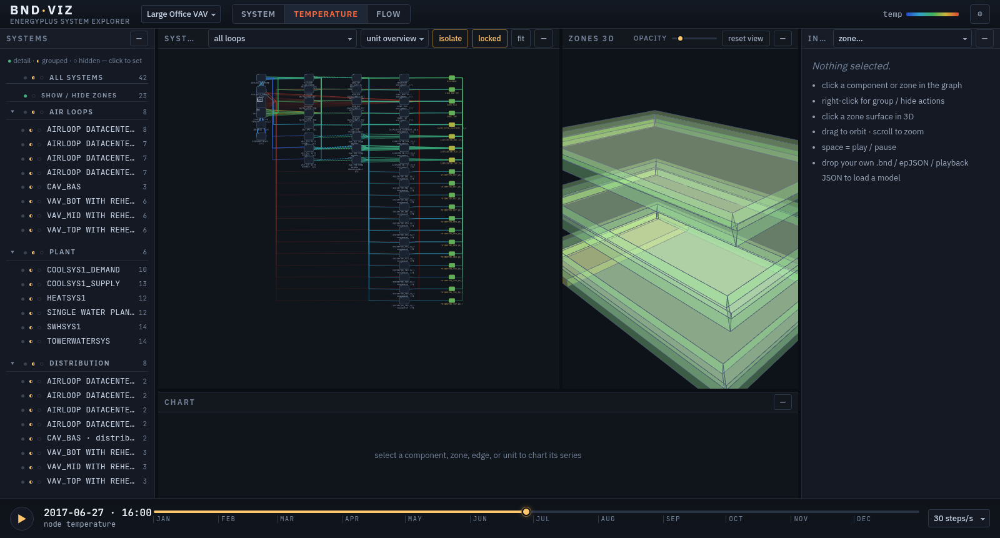

EnergyPlus tells you everything about how a building's HVAC is wired and
how it runs across the year — but that information is scattered across the
.bnd branch report, the model geometry, and gigabytes of
timeseries output. bnd·viz pulls those together into one
interactive picture you can open in a browser tab.
It parses the EnergyPlus .bnd (Branch Node Details) report
into a live loop/branch graph — components are nodes, EnergyPlus nodes are
the edges — renders the zone geometry in 3D, and lets you scrub the whole
simulation year while temperatures and flows animate across both views.
No backend, no install, no license server: it runs entirely client-side.
.bnd branch-node-details report becomes a live loop/branch graph.Everything bnd·viz reads is a standard EnergyPlus output — if you can run a simulation, you already have the inputs. Drag these onto the app:
eplusout.bnd — the Branch Node Details report, written automatically on every run, for the HVAC topology.eplusout.sql SQLite output, for the annual playback.The repo includes the small Node scripts used to extract the timeseries JSON from a simulation, so you can wire it to your own runs.


